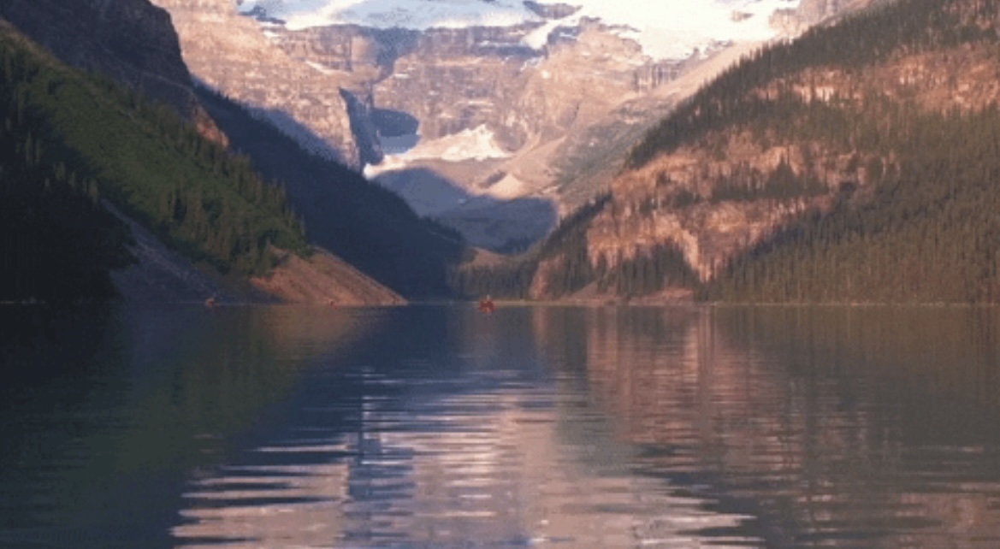
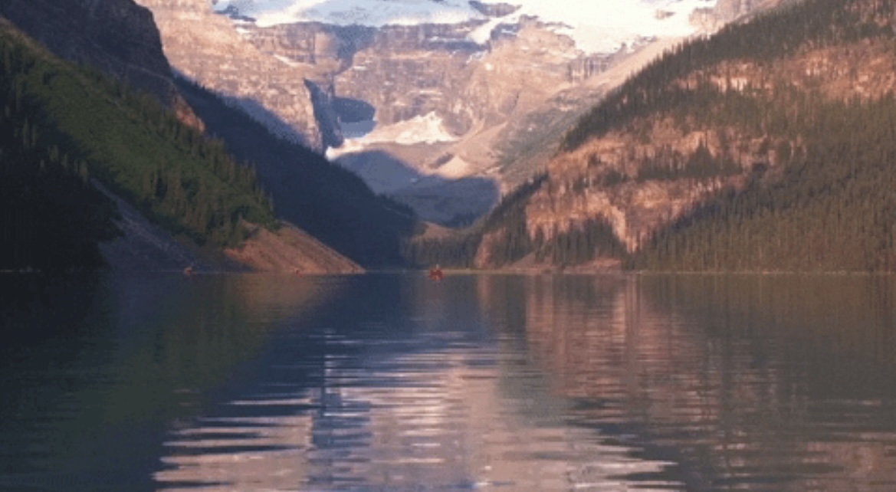
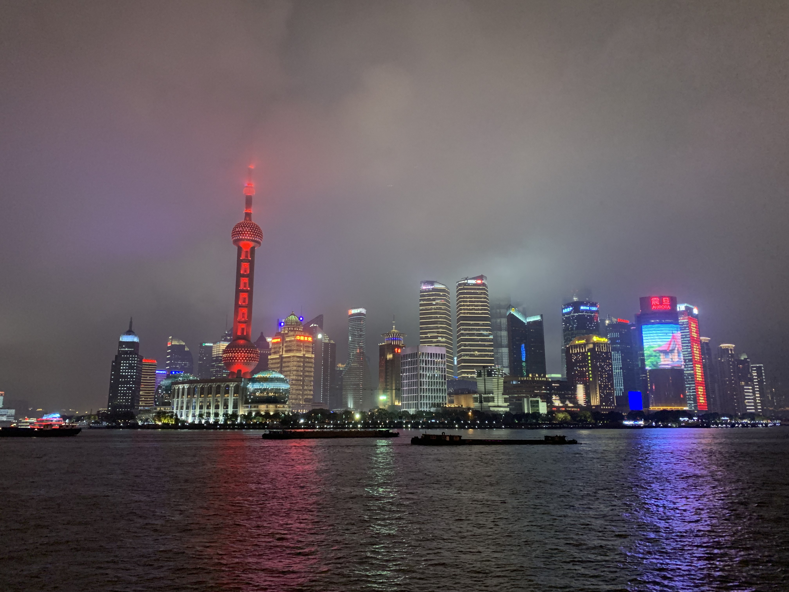
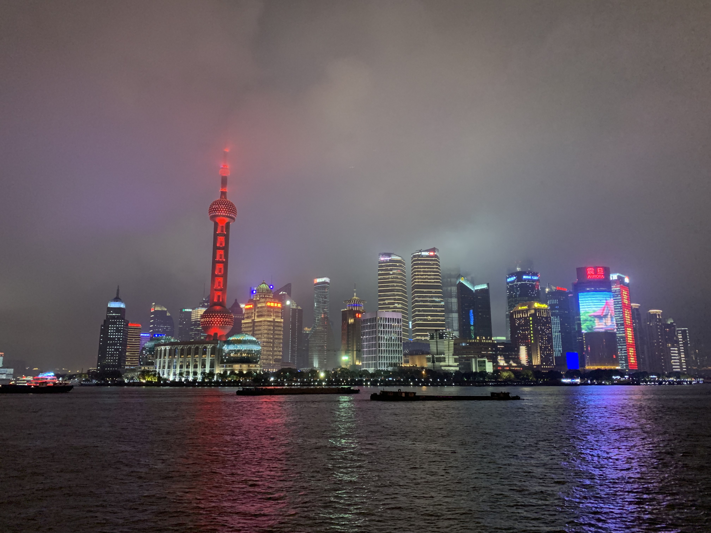

TRAVEL
Banff National Park
Geographic Location: Western Canada
 

Banff National Park is in Western Canada in the province of Alberta. It is near the city of Calgary and situated in the Rocky Mountains. Banff is known for its mountains and natural beauty, along with its plant and animal life. The national park fuels the tourist industry in Western Canada.
Banff has many attractions within its borders including numerous lakes fed by glaciers creating an iconic turquoise color. Banff also borders numerous other national parks further boosting its attractiveness as a tourist location. Banff’s glaciers have been shrinking and may disappear in the next few decades.
Photo Gallery


Shanghai, China
 

Geographical Location: Asia
Shanghai, a vibrant metropolis, is nestled along the eastern coast of China. With a population of over 26 million, it ranks as one of the world's most populous cities and serves as a global financial hub. The cityscape of Shanghai is an exquisite blend of history and modernity, where towering skyscrapers such as the iconic Oriental Pearl Tower and the Shanghai Tower punctuate the skyline alongside historical landmarks like the Bund, a waterfront promenade that showcases colonial-era architecture.
The city has an unparalleled shoppign scene that caters to all tastes, from luxury brands in shiny malls to hidden gems in busy markets. Moreover, Shanghai's culinary landscape is a testament to its multiculturalism, offering a symphony of flavors that range from traditional street food like xiaolongbao (soup dumplings) to avant-garde dining experiences.
Photo Gallery


Paris, France


Geographical Location: Europe
Paris is one of the oldest cities in Europe and the city of romance. With a vast amount of cultural history, lined with iconic landmarks, intimate scenes, and world-renowned art museums.
Paris welcomes millions of visitors annually, each drawn to its exquisite charm and beautiful ambiance. Enjoy tasty treats and exquisite cuisine await, while city landmarks illuminate the night sky.
Photo Gallery


Rajasthan, India


Geographical Location: Asia
Rajasthan, located in northwestern India, is a captivating state renowned for its opulent palaces, ancient forts, and vibrant culture. The "Land of Kings" boasts cities like Jaipur with its bustling markets, Udaipur with its serene lakes, and Jaisalmer with its golden desert dunes. This region's warm hospitality and desert charm make it a cultural treasure.
Beyond its architectural marvels, Rajasthan's natural beauty shines through its national parks and wildlife sanctuaries, offering glimpses of majestic tigers and diverse bird species. The state's cuisine, known for its aromatic spices, presents dishes like Dal Baati Churma that showcase its rich flavors. From historical heritage to natural wonders, Rajasthan presents a kaleidoscope of India's vibrant identity.
Photo Gallery


Sequoia National Park


Geographical Location: North America
Sequoia National Park is a large forest located in the Sierra Nevada mountain range in California. It is famous for its gigantic sequoia and redwood trees, as well as its underground Crystal Cave. The park is a well-known attraction to many tourists, receiving more than a million visitors annually. In addition to its collection of giant trees, Sequoia National Park is also home to thousands of prevalent flora and fauna.
Perhaps the most famous feature of Sequoia National Park is the General Sherman tree – the largest tree in the world. Measuring in at 275 feet tall, the tree towers over the surrounding landscape and the people who come to view it. As of today, the General Sherman tree is estimated to be around 2200 years old.
Photo Gallery


Sofia, Bulgaria


Geographical Location: Europe
Sofia is the capital city of Bulgaria, a country located in Eastern Europe. It is part of the European Union and the primary language spoken is Bulgarian. The city's population is around 1.3 million. In addition to its urban structures, Sofia also contains a mountain peak called “Vitosha”.
Vitosha is located 30 minutes from the capital's center, and can be reached by foot, car, and by lift. The peak has an elevation of 7,520 feet and during the summer months the average temperature is around 64 degrees fahrenheit. This makes it a great sight for any type of traveler who seeks the outdoors.